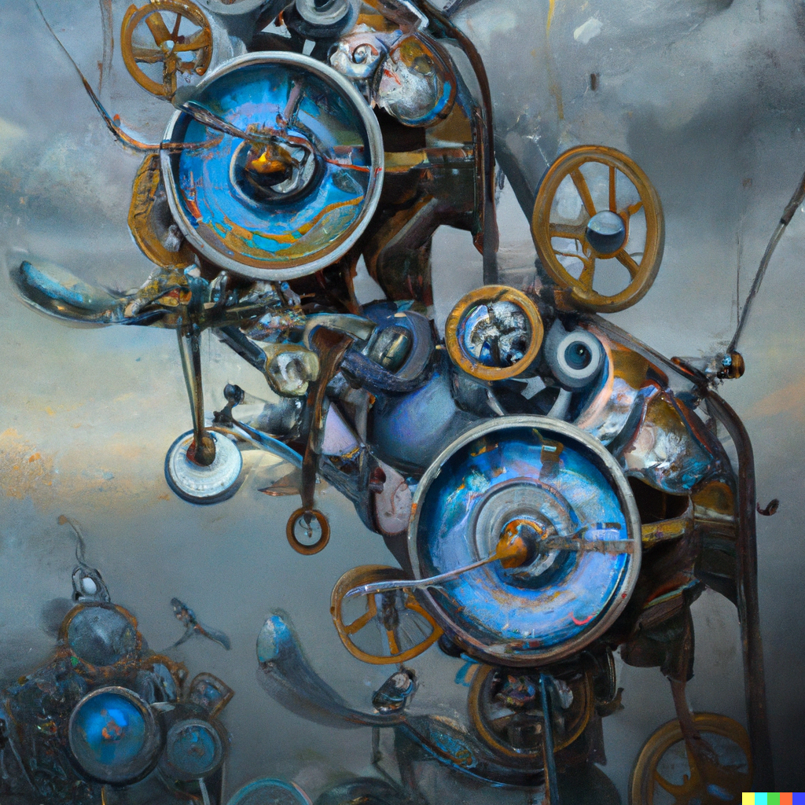

OpenAI’s Dall-E 2 became available in beta a month ago, and as a big fan of generative text-to-image models I instantly joined the waitlist.
After a little less than a month, the email arrived and I was notified I was finally allowed to use DALL-E 2! OpenAI gave me 50 free credits, with a monthly refill of 15 more from September onwards.
I won’t go into how text-to-image models work here, and for how to write prompts for DALL-E I recommend you see my prompt guide for AI art (or my StableDiffusion prompt guide, where I also keep adding new ‘tried and tested’ prompts as I discover them.
I’ve tried multiple different prompts, style cues, etc., and I’ll keep adding the ones that generate the coolest images there.
To anyone on the fence about trying DALL-E 2, I can genuinely recommend it. Prompting the model and seeing what it comes up with is almost addictive, and creates this beautiful dopamine feedback loop that just keeps you glued to your keyboard until you’ve spent all your credits. Or at least that’s how it went for me.
Personally, I like asking these models for fantasy illustrations, landscapes and that kind of stuff, as I find that area less explored than, say, hyper realistic renders or popular media characters. However given how good DALL-E 2 is at photorealism, I did try my hand at some photograph prompts.
As a summary, here are some of the prompt templates that have yielded the best results for me:
- Pixar style 3D render of X
- A photograph of X, 4k, detailed, [vivid colors]
- Low-poly render of X; high resolution, 4k
- A digital illustration of X, 4k, detailed, trending in artstation, [fantasy vivid colors/painter name for style/ghibli/cottagecore/steampunk]
Generally, remember to describe the thing you want as specifically as you can. For instance if you want a red panda knight, instead of red panda knight you may want to write “A digital illustration of a red panda wearing a knight armor, with sword”. Otherwise in the worst case scenario, you may get a red panda behind a helmet that covers its furry face and nobody will know its secret!
The first thing that surprised me with this new model is how, unlike older ones like DALL-E mini, it generally understands prepositions and simple scene composition.
The hat goes in the head, these are two characters and each has its own adjectives, blue sphere over green cube, etc.
Because of that, many of my first experiments were about composing scenes with several modifiers and seeing how the model handled each piece of the input. I also played around a lot with style cues, usually keeping the ones that yielded the most endearing pictures.
One thing I do is trying many prompts out on Craiyon or other free models first, and then sending the ones that perform better (to my taste) to DALL-E 2, as I had a limited budget in comparison. I expect this will be less necessary as models get cheaper and better [Update: this prediction realized a week later after StableDiffusion’s release]. In fact DALL-E 2 gave me satisfying images for all prompts except one on the first try, though they not always fit the description well if it is complex enough (more on that later). This was not possible 6 months ago and I was not expecting it to happen so quick.
Given how much better DALL-E 2 is, you won’t need to do that much prompt engineering as in previous models, so this is why my guide is a lot simpler this time around.
With that said, in general I found DALL-E 2 to be eerily effective, a lot better than I would have predicted a neural network to be even a year ago, and I really can’t imagine what we will have in 2 or 3 years, available for free download and consumer use.
I hear stable diffusion, which is roughly equivalent in performance to DALL-E 2, already runs on 5GB of VRAM, and even though that is still above my budget (I think my GPU has 4GB), I find it extremely impressive.
However, I won’t try to predict the capabilities or effects future models will have, I’ll leave that to more experienced people on twitter.
[Edit: I wrote a separate post about StableDiffusion, how it compares against DALL-E 2 and my rough reflections and predictions for this space. It also contains most of the interesting resources and links I found about AI art.]
Without further ado, here are some cool images I drew with DALL-E 2! I hope if you needed some inspiration for prompts, you will be able to copy the ones you like the most and tune them to your own needs.
DALL-E 2 Experiments: 3D Animation
For my first set of prompts, I tried doing some 3D renders. I had seen somewhere that DALL-E 2 was capable of responding well to the prompt “Pixar style 3D render of…” and it really did not disappoint me.
I also tried a low-poly prompt, but it didn’t have a satisfying result so I shelved those for next time.
Note that all images are actually in high resolution, I am just choosing to render them small so they fit in the screen better. If you like one, you can open it in a new tab to see its full, high resolution glory.
“Pixar style 3D render of a baby hippo, 4k, high resolution, trending in artstation”

Right away, I was blown away by the quality of the render, and the picture’s resolution. I was not expecting, nor was I used to my first prompt already working so well. It’s like suddenly I didn’t have to make an effort!
So I jumped to compositions right away.
“Pixar style 3D render of a fox wearing a tophat, 4k, high resolution, trending in artstation”
Wallpaper Material: Scenes and Landscapes
As I said before, I’ve previously found that landscapes and static scenes are usually better rendered than characters performing actions, so I tend to prompt for that a lot.
With DALL-E 2, characters usually turned out fine too (as in the examples before) but I still have this bias towards nice paintings of landscapes, cities and so on. Something that would belong on r/FatasyLandscapes.
Here are some of the most beaufitul images I got using these sorts of prompts, and the prompts that made them. Most of them are even wallpaper material!
“An oil painting of a mechanical clockwork flying machine from the renaissance, Gorgeous digital painting, amazing art, artstation 3, realistic”

I reproduced this prompt almost verbatim from one I tried on eleutherAI’s .imagine model (and also on craiyon/DALL-E mini). We’ve come a long way since then!
Here is what that prompt yielded on the older models.

I really think a good metric for one of these results is “would I want to have this as a wallpaper?” or even “would I hang this on a wall?” and for this result, I am happy answering yes.
I tried a few other scene descriptions. Both of them had given me pretty neat images in the older models, so I wanted to see how much they improved on DALL-E 2. Once again, I was not disappointed.
First, I tried drawing some interior scenes.
“fantasy tavern interior | Breath-taking digital painting with warm colours amazing art mesmerizing, captivating, artstation 3”
I’m happy it got the tables and rafters right, it looks amazing!
And then a classic, our cluttered ghibli style cabin in the woods.
“Cluttered house in the woods | anime oil painting high resolution cottagecore ghibli inspired 4k”
As before, I can’t help but find a big improvement versus the old ones.

“German palace gardens and towers | oil painting, trending in artstation, anime”
“The green idyllic Arcadian prairie with sheep by Thomas Cole, Breath-taking digital painting with placid colours, amazing art, artstation 3, cottagecore”
Loving what it did with the sky on the first one. It’s a different style from the second one, too.
“A digital illustration of glowing toadstools beside a pond with lilypads, 4k, detailed, trending in artstation”
These reminded me of Magic: The Gathering illustrations (maybe for a Swamp) and the first one looks amazing with the fungi that is actually reflecting on the pond.
Fantasy Illustrations
After a lot of tinkering, I arrived at the prompt that so far has given me 100% satisfying results (I also added it to the older post).
“A digital illustration of X, 4k, detailed, trending in artstation, fantasy”
Here come my results for different values of X.
“A digital illustration of a medieval town, 4k, detailed, trending in artstation, fantasy”
These look almost like concept art for a game, and I would be happy using them as imagination fodder for a D&D campaign.
“A digital illustration of the Babel tower, 4k, detailed, trending in artstation, fantasy vivid colors”

“A digital illustration of a steampunk library with clockwork machines, 4k, detailed, trending in artstation, fantasy vivid colors”
“A digital illustration of Lothlorien houses on treetops with fireflies, 4k, detailed, trending in artstation, fantasy vivid colors, organic and bent”
“A digital illustration of a steampunk flying machine in the sky with cogs and mechanisms, 4k, detailed, trending in artstation, fantasy vivid colors”
Lastly, for another throwback to old times, I tried:
“The white fox in the Arcadian praerie | Breath-taking digital painting with vivid colours amazing art mesmerizing, captivating, artstation 3, japanese style”
The scene’s composition got so much better, and now it actually looks like an illustration of a fox. This is what the old model did:

It’s hard to believe the jump that only took a single year is so significant. Even if the difference in budgets also obviously plays a role.
And how could I forget the site’s mascot: a cute anime otter (oil painting).
Conclusions
I don’t have a lot to say besides a) DALL-E 2 can consistently generate images that are on par with professional illustrations and b) that’s both awesome and eery.
If you’re an artist, I don’t think DALL-E 2 will replace you. But I honestly can’t imagine what DALL-E 3, or 4 will look like.
Imagine what will happen when in ~5 years we have 30 times more compute due to Moore’s law and suddenly synthesizing an image will take seconds in personal computers. What’s more, who can tell what the next generation of text-to-image models will be like, or how much more resource effective they’ll be? And what happens when generated images are so realistic and plausible (which arguably they already are) that they are as good as the training data, and suddenly we can do self-supervised learning and improve latent representations even more?
I am deeply interested in seeing where this will go, and which commercial applications people will come up with for these models beside the obvious “monetize art generation and let the dopamine cycle go brrr” or “make stock images obsolete”.
If you liked this post, please share it on Twitter, Reddit, or whatever you like!
All images in this article were made with DALL-E 2, you can use them for free. If you do please link to this post.